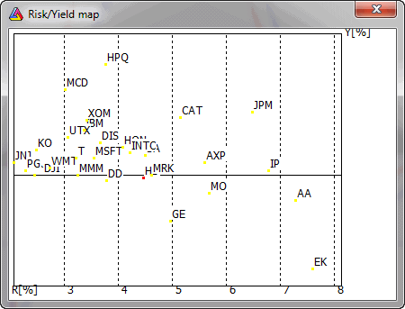

This map provides fast information about risk and possible yields. Yield is the average weekly percentage return, while Risk is a standard deviation of weekly percentage returns. Risk is presented on the X-axis, and yield on the Y-axis. Thus, in the upper part of the map, we have symbols giving the best yield, with risk increasing from left to right on the map.
The selected symbol is marked with a different color, and you can zoom a part of the map by pressing the left mouse button and marking a rectangle to zoom in.